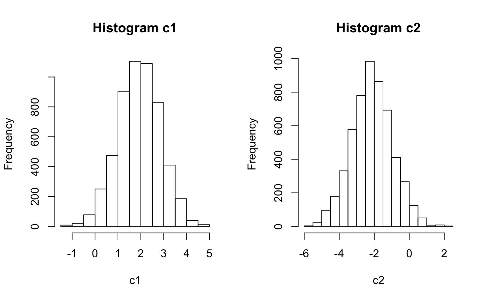

rwMHgen.RdrwMHgen computes random draws of parameters using a normal proposal distribution.
This function implements a generic form of RWMH from the package bayesdistreg
rwMHgen(start = NULL, posterior = NULL, ..., propob = NULL, const = NULL, seed = 1, scale = 1.5, iter = 5000, burn = floor(0.1 * iter), report = NULL)
| start | starting values of parameters for the MH algorithm. It is automatically generated from the normal proposal distribution but the user can also specify. |
|---|---|
| posterior | the log posterior distribution function.
Should take parameter input of the same length as |
| ... | additional arguments to the posterior function |
| propob | a list of mode and variance-covariance matrix of the normal proposal distribution. Save list as propob=list(mode=mode,var=variance-covariance) |
| const | a vector function of parameters showing non-negative inequality constraints to be satisfied. |
| seed | an integer as seed for reproducibility |
| scale | a value multiplied by |
| iter | number of random draws desired (default: 5000) |
| burn | burn-in period for the MH algorithm (default: floor(0.1*iter)) |
| report | a numeric frequency (i.e. after how many iterations to report progress) for reporting algorithm progress; default - NULL |
Matpram a matrix of parameter draws
postvals vector of posterior values corresponding to parameter draws Matpram
AcceptRatio the acceptance ratio
#a toy example for illustration ## f(c) = 1/(3.618*sqrt(pi))* exp(-0.6*(c[1]-2)^2-0.4*(c[2]+2)^2) # an improper posterior logpost = function(c) -0.6*(c[1]-2)^2-0.4*(c[2]+2)^2 #log posterior distribution optp<-optim(par=c(0,0),fn=logpost,control=list(fnscale=-1),hessian = TRUE) # laplace approximation of the posterior propob = list(mode=optp$par,var=-solve(optp$hessian)) #parameters of proposal distribution eigen(propob$var)$values # var-cov of proposal distribution is positive definite#> [1] 1.2500000 0.8333333MHobj<- rwMHgen(posterior = logpost,propob = propob,scale = "HS18",iter = 6000,report=1500)#>#>#>#>#># create an independent Metropolis-Hastings object dim(MHobj$Matpram) # a 2 x 5000 matrix with columns corresponding to draws of c1 and c2#> [1] 2 5400par(mfrow=c(1,2)) hist(MHobj$Matpram[1,],20,main = "Histogram c1",xlab = "c1") hist(MHobj$Matpram[2,],20,main = "Histogram c2",xlab = "c2"); par(mfrow=c(1,2))MHobj$AcceptRatio # acceptance ratio#> [1] 0.5488333